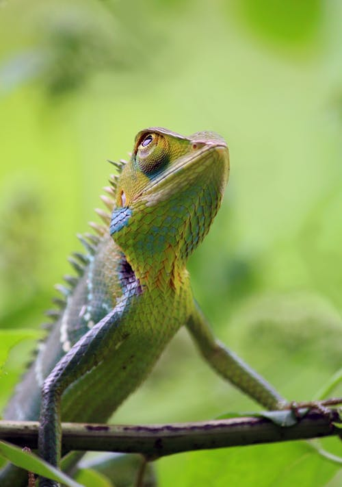

General Information
About Lizards

Lizards (suborder Lacertilia) are a widespread group of squamate reptiles, with over 6,000 species, ranging across all continents except Antarctica, as well as most oceanic island chains. The group is paraphyletic as it excludes the snakes and Amphisbaenia; some lizards are more closely related to these two excluded groups than they are to other lizards. Lizards range in size from chameleons and geckos a few centimeters long to the 3 meter long Komodo dragon.
Lizards typically have:
- rounded torsos
- elevated heads on short necks
- four limbs and long tails, although some are legless
Lizards make use of a variety of antipredator adaptations, including venom, camouflage, reflex bleeding, and the ability to sacrifice and regrow their tails.